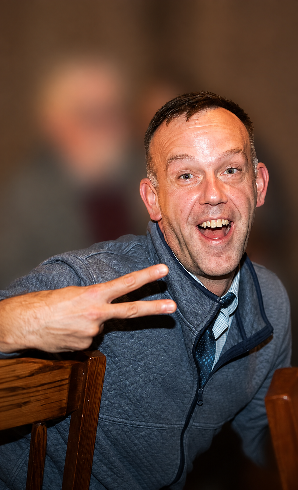

Twenty-five years of shipping software — from games, web and mobile, that earned up to $160M a year and reached up to 6 million daily players, to AI systems running in production today

"My career moved from building products at massive scale to building the foundations that let small teams grow."
I started at Zynga during FrontierVille's launch, then helped lead engineering as it scaled to millions of daily players — including a year the game generated roughly $160 million in revenue, about 15% of Zynga's online-game business at the time. From there I ran a 40-person engineering org at GREE across a portfolio of top-50-grossing mobile games.
The back half of my career has been the opposite problem: taking that scale experience and applying it to teams that don't have it yet. At Healthie I helped grow engineering from 4 to 12 people on the way to profitability. Most recently, at Impacked Packaging, I built production AI systems — semantic search, automated content generation — with lean teams and short paths from idea to production.
Beyond the résumé: home is Cape May, NJ. These days, I'm also writing pages like this one for my daughter, so the record is there when she wants it.
Pulled from the work above — independent projects will land here too.
{{ card.body }}
{{ item.a }}
Friends, former coworkers, curious minds, people who need a consultant — say hello.